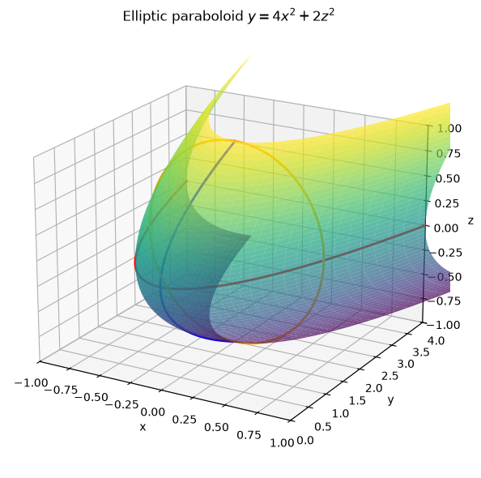
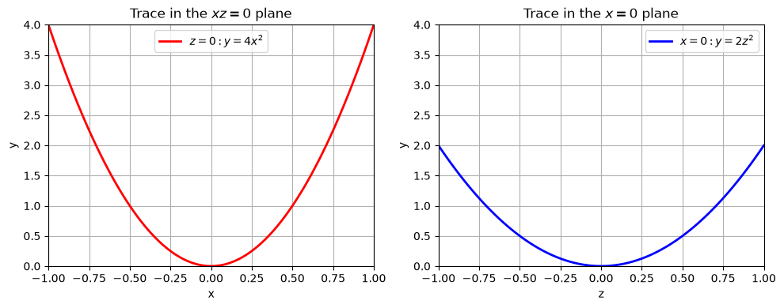
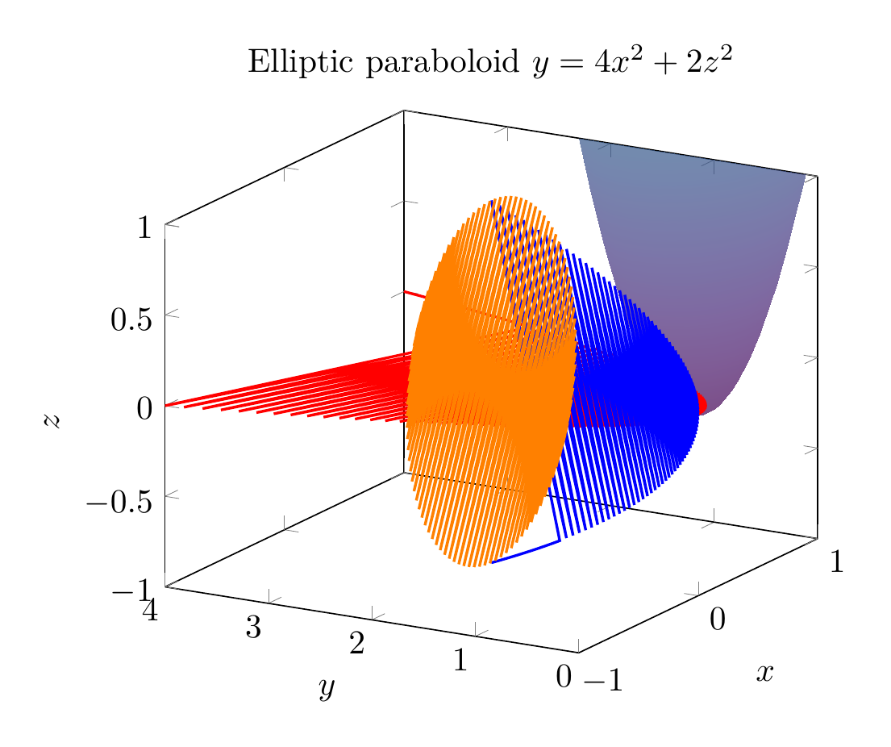
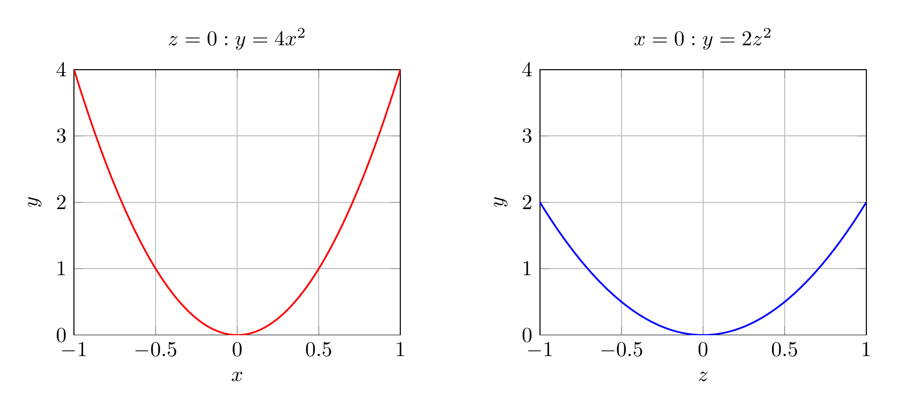

Path: mcma-Kimi-K2.7-Code/calculus-12.6.30/chat_20260825_024026_706604_utc_0800
Problem
Please solve the math problem in the image.

End of problem
Answer
# Reducing and Classifying the Surface
We are asked to reduce the equation
$$4x^2 - y + 2z^2 = 0$$
to a standard form, classify the surface, and sketch it.
## Step 1: Solve for the linear variable
The only variable that appears to the first power is $y$. Solve for $y$:
$$y = 4x^2 + 2z^2.$$
## Step 2: Write in standard form
Divide both sides so the right-hand side is a sum of squares equal to $1$:
$$y = \frac{x^2}{\frac14} + \frac{z^2}{\frac12}.$$
This matches the standard form of an **elliptic paraboloid** that opens in the positive $y$-direction:
$$y = \frac{x^2}{a^2} + \frac{z^2}{c^2}, \qquad a^2 = \frac14,\; c^2 = \frac12.$$
Thus $a = \frac12$ and $c = \frac{1}{\sqrt2}$.
## Step 3: Classify the surface
The surface is an **elliptic paraboloid**.
- Its vertex is at the origin $(0,0,0)$.
- It opens in the direction of increasing $y$.
- Cross-sections with planes $y = k$ ($k>0$) are ellipses:
$$\frac{x^2}{k/4} + \frac{z^2}{k/2} = 1.$$
- Cross-sections with planes $z = 0$ and $x = 0$ are parabolas:
$$z=0:\; y = 4x^2, \qquad x=0:\; y = 2z^2.$$
## Final Answer
$$\boxed{y = \frac{x^2}{1/4} + \frac{z^2}{1/2},\quad \text{an elliptic paraboloid opening in the positive } y\text{-direction}}$$
---




\documentclass[border=10pt]{standalone}
\usepackage{pgfplots}
\pgfplotsset{compat=1.18}
\begin{document}
\begin{tikzpicture}
\begin{axis}[
xlabel=$x$, ylabel=$y$, zlabel=$z$,
domain=-1:1, y domain=-1:1,
samples=40,
colormap/viridis,
view={-60}{20},
z buffer=sort,
xmin=-1, xmax=1,
ymin=0, ymax=4,
zmin=-1, zmax=1,
title={Elliptic paraboloid $y=4x^2+2z^2$}
]
\addplot3[surf, opacity=0.7, shader=interp] {4*x^2+2*y^2};
\addplot3[red, thick, samples=100, domain=-1:1] ({x},{4*x^2},{0});
\addplot3[blue, thick, samples=100, domain=-1:1] ({0},{2*x^2},{x});
\addplot3[orange, thick, samples=100, domain=0:360] ({sqrt(0.5)*cos(x)},{2},{sin(x)});
\end{axis}
\end{tikzpicture}
\end{document}

\documentclass[border=10pt]{standalone}
\usepackage{pgfplots}
\pgfplotsset{compat=1.18}
\begin{document}
\begin{tikzpicture}
\begin{axis}[
width=7cm, height=6cm,
xlabel=$x$, ylabel=$y$,
xmin=-1, xmax=1,
ymin=0, ymax=4,
grid=major,
title={$z=0: y=4x^2$}
]
\addplot[red, thick, domain=-1:1, samples=100] {4*x^2};
\end{axis}
\end{tikzpicture}
\hspace{1cm}
\begin{tikzpicture}
\begin{axis}[
width=7cm, height=6cm,
xlabel=$z$, ylabel=$y$,
xmin=-1, xmax=1,
ymin=0, ymax=4,
grid=major,
title={$x=0: y=2z^2$}
]
\addplot[blue, thick, domain=-1:1, samples=100] {2*x^2};
\end{axis}
\end{tikzpicture}
\end{document}

End of answer